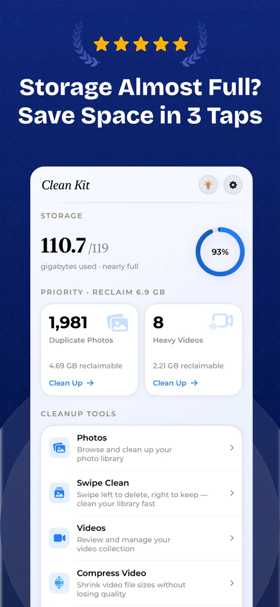
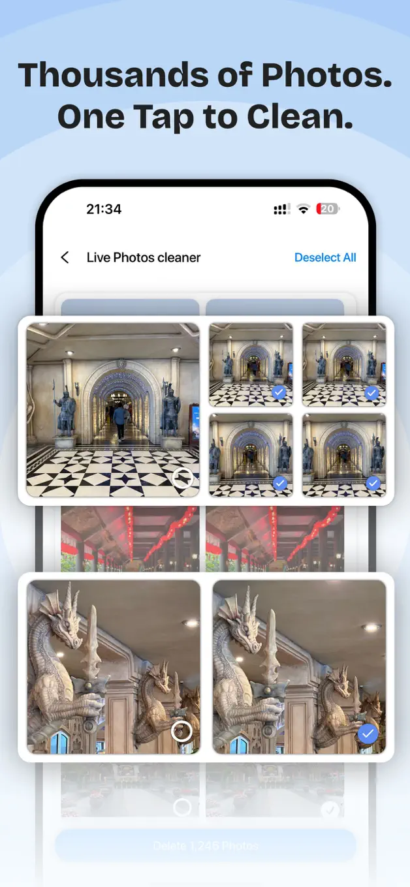
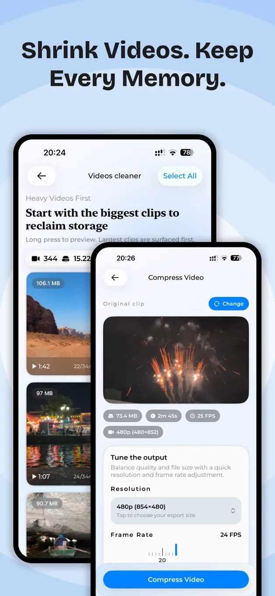
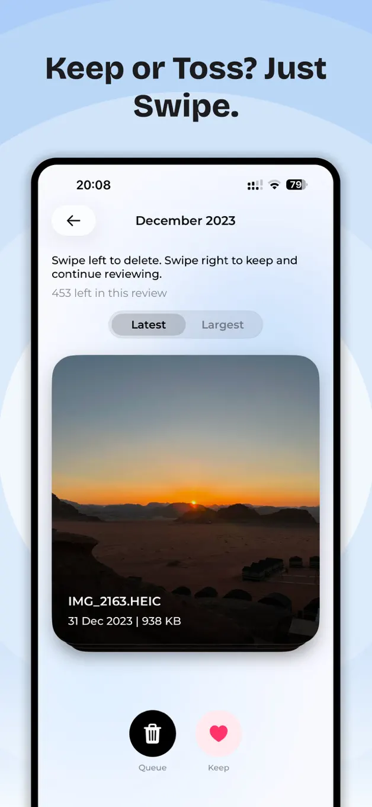

Find photo clutter
Group duplicate and similar photos so you can compare and keep the best shot.
Storage Cleaner & Media Organiser
Find duplicate photos, review large videos, swipe through clutter and clean up contacts and calendar events with a clear, review-first workflow.

What CleanKit does
CleanKit brings the most useful cleanup tools together without turning storage management into another chore.
Group duplicate and similar photos so you can compare and keep the best shot.
Review large videos and compress or remove the files taking the most space.
Merge duplicate contacts and clear outdated calendar entries from one toolkit.
How it works
CleanKit shows where your storage is going and lets you decide what should stay.
Allow access to the areas you want to review and see a clear storage summary.
Compare similar photos, large videos, contacts and events before acting.
Remove selected clutter or compress large videos when you are ready.
Inside CleanKit
A focused view of the files that deserve your attention.



Frequently asked
No. CleanKit is designed around review and selection so you can decide what should be removed.
CleanKit can help review duplicate and similar photos, large videos, duplicate contacts and outdated calendar events.
Yes. The video tools can reduce file size so you can keep a smaller copy while reclaiming storage.
Cleanup analysis is performed locally on your device. CleanKit needs permission only for the areas you choose to review.
Yes. CleanKit is free to download and offers optional in-app purchases for additional features.
Understand what fills your phone, review it on your terms and make space with confidence.
Download CleanKit